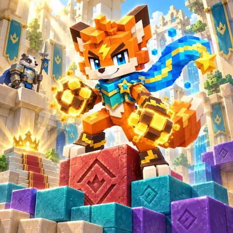

Crownfall

Defeat weaker guards, then collect the crown.

Defeat weaker guards, then collect the crown.
Guide a fox down a block-built castle to its crown. You choose which floors disappear; the fox, guards and supplies then fall onto the supports that remain. The challenge is arranging a safe sequence of encounters, not steering every sword swing. Strong guards, spikes, locked floors and shielded enemies can stop a descent that looked safe from above. A clear means reaching the crown after every required guard, boss and seal condition is satisfied. Power gained during a puzzle belongs to that attempt; the campaign reward is access to the next puzzle and replay badges.
Preview the route, calculate, then confirm removal. Tap connected matching blocks to remove the whole group; blocks do not fall or refill. Your fox falls, then approaches the nearest guard on the same platform (left on a tie). Greater power wins and absorbs the guard’s power; equal or lower loses. Drag the map or use arrows to look around. ◎ follows the hero; ▦ shows the whole map. These controls move the camera, not the hero. The camera follows movement and pauses at each fight.
Keys open gates; runes remove shields. Defeat flag bearers to remove their bonuses. Avoid spikes and meet the boss conditions before taking the crown. One power number: weapons and crystals add, multipliers multiply the current total permanently. Defeating a weaker enemy adds its power. Equal power loses. For an enemy of 80: (10 + 20) × 3 = 90 wins; 10 × 3 + 20 = 50 loses. Route previews show operations, not the answer.
Stages 1–4 introduce dropping, absorption and a landing sword. From stage 5, addition before multiplication matters; split floors can require dropping a strong guard away before releasing the fox. Middle stages mix keys, mirrored routes, shield runes and linked rooms. Later puzzles require preparation across several floors, not just clearing beneath you. Stage 20 checks the side of approach; stage 25 has a second boss phase; stage 30 combines a banner, a shield and seals in order. These are fixed puzzles with increasing combinations, not a selectable difficulty mode.
Clear a puzzle to unlock the next. Try new routes around hazards and boss conditions; replay for no-hint and move-target badges. Undo restores the last action. Keys remove all matching gates. Calculate before opening. Collect the matching rune before approaching a shield. Calculate the power route; collect runes and seals in order.
Each removal is a deliberate turn. Connected blocks vanish without refilling, so their absence is a lasting change to the route. The same choices produce the same outcome, letting a retry test a different order without luck. Attacks happen automatically after an approach: the visible wind-up and contact explain the calculation, rather than asking for a reaction tap. The camera follows the descent, while dragging, arrows and overview let you inspect floors outside the current view. This keeps a tall castle readable on a phone without shrinking the entire puzzle into one screen. The preview supports planning but does not supply a winning sequence.
Use touch, mouse or focused-cell keyboard controls. There is no timer, login or in-game spending. Allow roughly 1–3 minutes per attempt, longer for harder routes. Unlocks, badges, settings and an unfinished run use this browser’s local storage; they do not sync between devices. Clearing browser data can remove them. If saving is unavailable, play can continue in the session.
Progress and an unfinished puzzle stay in this browser. Retry preserves unlocked stages.